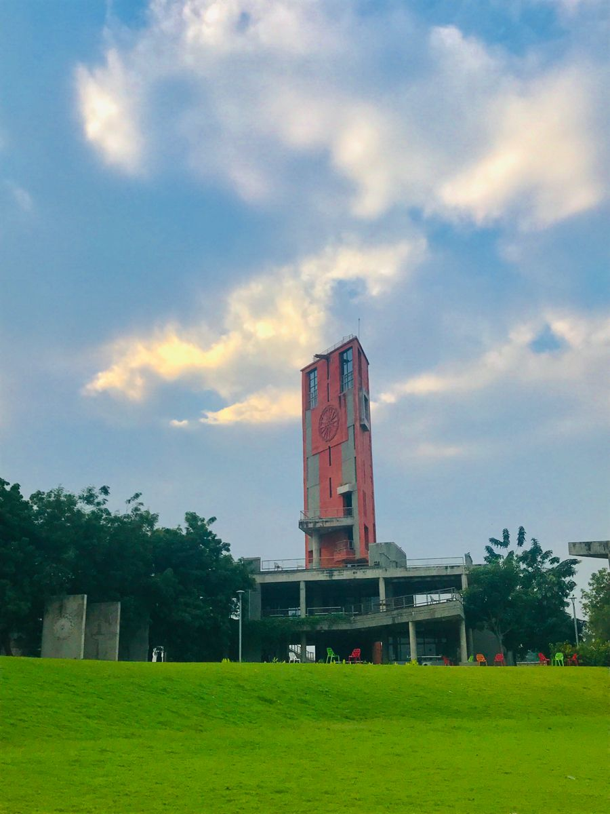
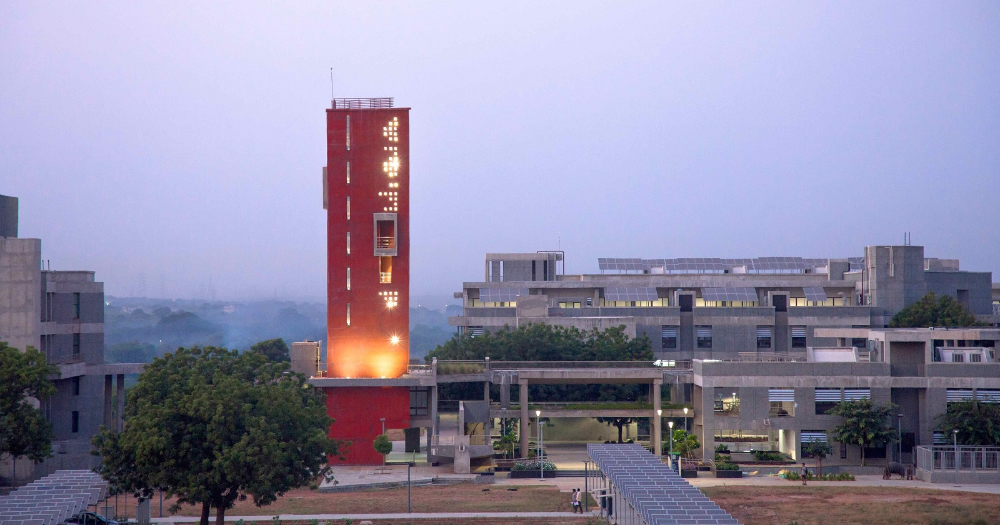
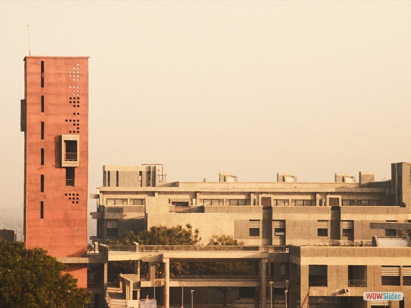

Gallery



The Lal Minar, located at IIT Gandhinagar, is a symbol of heritage and modernity. It stands as a testament to the historical significance of this region while blending seamlessly with the contemporary IITGN campus.

IIT Gandhinagar (IITGN) is one of the premier institutes in India. It is dedicated to producing world-class engineers and scientists, while also providing students with a cultural environment to thrive and innovate.